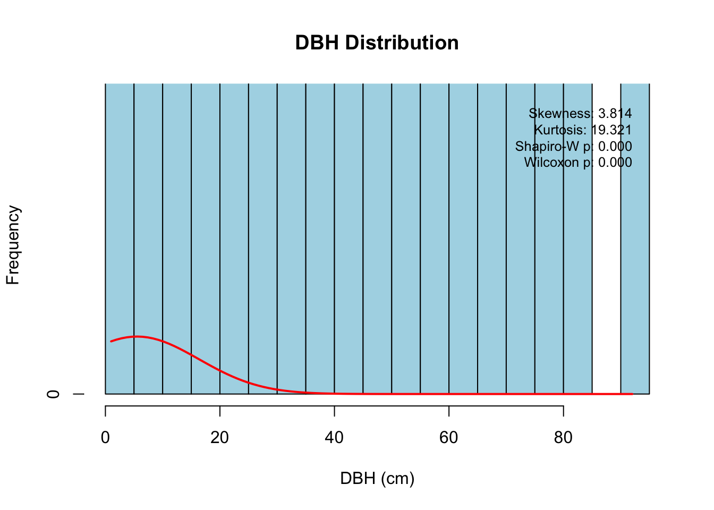
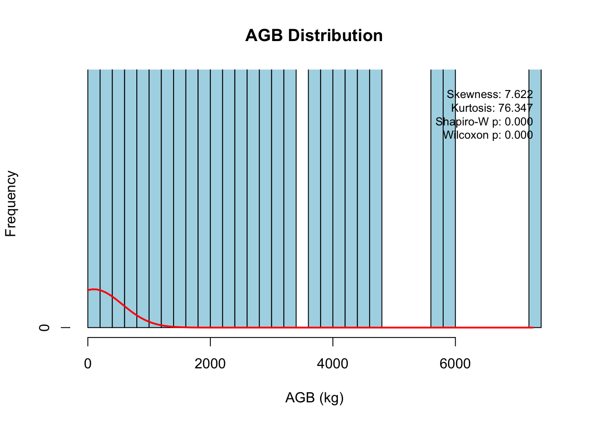
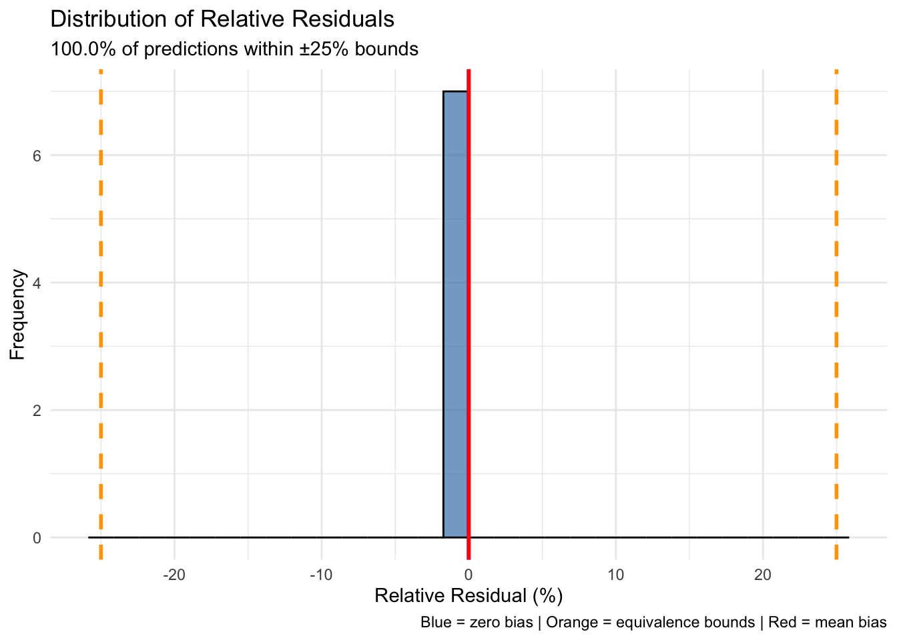

easypackages::packages(
"ropensci/allodb", "animation",
"BIOMASS",
"cols4all", "covr", "cowplot", "caret",
"dataMaid", "DescTools", "dplyr",
"FawR", "ForestToolsRS", "forestdata",
"ggplot2", "giscoR",
"htmltools",
"janitor", "jsonlite",
"lattice", "leaflet.providers", "leafem", "lwgeom", "leaflet",
"kableExtra", "kernlab", "knitr",
"mapedit", "mapview", "maptiles", "Mlmetrics",
"olsrr", "openxlsx",
"plotly", "psych",
"randomForest", "rasterVis", "raster","RColorBrewer", "rmarkdown", "renv",
"s2", "sf", "scales", "sits","spdep", "stars", "stringr",
"terra", "tmap", "tmaptools", "tidymodels", "tidyverse", "tune",
"useful",
"webr",
prompt = F
)1 Allometry
Overview
Allometric equations represent the proportional and scaling relationships between different tree dimensions, such as the relationship between a tree’s diameter and its height, biomass, or crown size. These relationships translate tree diameter measurements into biomass estimates, forming the foundation of forest carbon accounting. This chapter addresses uncertainty quantification in processes of allometric model selection, parameter estimation, correction of measurement error and predictive bias.
Environment Setup
1.1 Allometry Equations
\[ AGB = \alpha \times DBH^{\beta} \]
Or in logarithmic form…
\[ \ln(AGB) = \ln(\alpha) + \beta \times \ln(DBH) + \epsilon \]
Where:
- AGB: Aboveground biomass (kg)
- DBH: Diameter at breast height (cm)
- α, β: Allometric parameters (species/biome-specific)
- ε: Random error term
Allometric equations predict aboveground biomass from diameter measurements using species or biome-specific parameters. Uncertainty compounds from three main sources: model selection (tropical vs. temperate equations, species-specific vs. generic), parameter estimation (regression standard errors, sample sizes), and field measurements (DBH precision ±0.5-1.0 cm, clinometer errors, wood density variability). Log-transformation adds complexity through back-transformation bias that must be corrected to avoid systematically underestimating biomass.
ART Exemption
ART-TREES V2.0 Section 8 excludes structural uncertainty in allometric models from uncertainty deductions when models are applied consistently between baseline and crediting periods. Since systematic bias cancels in net change calculations, you only need to quantify random error: parameter estimation uncertainty, measurement precision, and sampling uncertainty when scaling from plots to landscapes.
This creates a strategic advantage: reduce uncertainty deductions by maintaining consistent model application across time periods, upgrading from IPCC Tier 1 defaults to country-specific Tier 2 parameters, and investing in measurement precision rather than destructive sampling. Let’s implement this with Monte Carlo simulation.
1.2 Allometry Selection
In the following steps, we use the allodb package to access its global collection of allometric equations and demonstrate uncertainty propagation with real forest inventory data. The demonstration dataset (scbi_stem1) originates from the Smithsonian Conservation Biology Institute ForestGEO sample plots in Front Royal, Virginia, USA. This 25.6-hectare mature secondary forest is dominated by Appalachian mixed hardwood species including tulip poplar (Liriodendron tulipifera), oaks (Quercus spp.), and hickories (Carya spp.), representing the Blue Ridge and Piedmont regions of eastern North America.
scbi_stem1 <- read.csv("./data/scbi_stem1.csv")By clicking “Run Code” below, we derive descriptive statistics for the scbi_stem1 dataset. Results should report a total of 2,287 stem measurements and describe dimensions of the following variables:
-
dbh: Diameter at breast height (cm) -
genus: Taxonomic genus identification -
species: Species epithet -
Family: Taxonomic family classification
Following best practices for allometric model selection, equations are queried for dominant taxa using the new_equations() function with taxonomic filters based on:
- Geographic proximity: Prioritize equations from eastern North America to minimize climatic and edaphic differences
- DBH range: Ensure equation applicability spans 80% of measured diameter distribution for each species to avoid extrapolation bias
- Taxonomic specificity: Select species-level equations where available; genus or family-level equations when species-specific data absent
- Sample size: Minimum n=50 trees for species-specific equations; n>150 for genus-level equations
Important
Note the significant range in DBH values spanning from small understory trees to canopy dominants exceeding 100 cm diameter. This presents an early indicator or statistical operations and validation checks needed ahead.
# load allometric equations
data(equations)
data("equations_metadata")
# extract variables
show_cols = c(
"equation_id",
"equation_taxa",
"equation_allometry")
# extract genus
eq_tab_acer = new_equations(subset_taxa = "Acer")Equation Criteria
The filtered Acer equation table contains species-specific models (A. rubrum, A. saccharum), genus-level equations from eastern US studies, and family-level Sapindaceae equations serving as taxonomic fallbacks.
| Attribute | Purpose | Selection Threshold |
|---|---|---|
equation_id |
Citation traceability | Document provenance |
equation_taxa |
Taxonomic resolution | Species > genus > family |
geographic_area |
Regional origin | Same ecoregion > biome > climate |
koppen_climate |
Climate matching | Match Cfa for SCBI |
sample_size |
Calibration sample | n ≥ 50 (species), n ≥ 150 (genus) |
dbh_min / dbh_max
|
Validity range | Cover 80% of observed DBH |
equation_allometry |
Mathematical form | Enable parameter extraction |
This structured metadata enables data-driven, auditable equation selection under REDD+ verification protocols.
With target variables confirmed, species extracted, and known coordinates indentified, we compute aboveground biomass volume for all scbi trees in the following as a new abg variable.
# derive biomass volume of scbi trees
scbi_stem1$agb <- allodb::get_biomass(
dbh = scbi_stem1$dbh,
genus = scbi_stem1$genus,
species = scbi_stem1$species,
coords = c(-78.2, 38.9)
)Equivalence Testing
Equivalence testing is a statistical validation method used in to demonstrate that a new model’s predictions are acceptably similar or “equivalent” to independent observations or an accepted reference estimate. This similarity is defined as being within a predefined, acceptable margin of difference; the equivalence margin.
Unlike traditional Null Hypothesis Significance Testing (NHST), which only tests if models are statistically different, ET asks whether models are similar enough for operational use. This approach is essential because traditional NHST is susceptible to Type II errors (false negatives), where insufficient statistical power (e.g., small sample size, N) leads to incorrectly accepting models with unacceptable differences. For instance, studies have shown that N < 15 samples often lack the statistical power to reject invalid models (Paul et al., 2018). For more detailed guidance, we recommed consulting the technical guidelines provided by the NASA Working Group on Land Product Calibration and Validation (Duncanson et al., 2021). Specifically, the following key performance metrics are emphasized:
- Statistical Power: A minimum sample size is considered to ensure adequate statistical power, targeting >50 per class or species.
- Equivalence Margin: Define the acceptable maximum difference, often set as a percentage of equivalence test threshold, i.e <25% minimum detectable negligible difference.
- Dataset Structure: The validation dataset should possess a similar structural distribution as the calibration dataset, such as tree-size structure
- Data Coverage: Ensure inclusion of critical dimensional elements, including across small and large cohorts, as large elements often hold a disproportionately large share of the biomass variable.
Step 1: Equivalence Thresholds
A primary threshold of ±25% of relative error (90% CI) is recommended, while secondary thresholds are approximated as follows:
- Systematic bias < ±5% relative RSME (90% CI)
- RMSE within 1.5× calibration dataset RMSE
- Adequate sample size across diameter distribution
# Filter by adequate sample size (n ≥ 50)
species_counts <- scbi_stem1 |>
dplyr::group_by(genus, species) |>
dplyr::summarise(n = n(), .groups = 'drop') |>
dplyr::filter(n >= 50)
cat("Species meeting minimum sample (n ≥ 50):\n")
## Species meeting minimum sample (n ≥ 50):
print(species_counts)
## # A tibble: 7 × 3
## genus species n
## <chr> <chr> <int>
## 1 Amelanchier arborea 123
## 2 Carpinus caroliniana 57
## 3 Carya glabra 64
## 4 Fraxinus americana 52
## 5 Hamamelis virginiana 107
## 6 Lindera benzoin 1201
## # ℹ 1 more row
# Example: Liriodendron tulipifera (tulip poplar)
lirio_data <- scbi_stem1 |>
dplyr::filter(genus == "Liriodendron", species == "tulipifera") |>
dplyr::filter(!is.na(dbh), !is.na(agb))
cat(sprintf("\nLiriodendron tulipifera sample size: %d trees\n", nrow(lirio_data)))
##
## Liriodendron tulipifera sample size: 17 trees
cat(sprintf("DBH range: %.1f - %.1f cm\n", min(lirio_data$dbh), max(lirio_data$dbh)))
## DBH range: 5.4 - 74.8 cm1.2.0.1 Step 2: Age Class Stratification
Stratification by size class or age cohort involves a critical component in forest biomass modeling. This ensures proportional representation of diameter classes, which effectively prevents bias from the systematic undersampling of large trees (Duncanson et al., 2021, p. 100; Paul et al., 2017).
# derive diameter class stratification
lirio_data <- lirio_data |> dplyr::mutate(dbh_class = cut(dbh,
breaks = c(0, 10, 20, 30, 40, 50, 100),
labels = c("0-10", "10-20", "20-30", "30-40", "40-50", ">50"))
)
# Check distribution across size classes
size_distribution <- lirio_data |>
dplyr::group_by(dbh_class) |>
dplyr::summarise(n = n(),
mean_dbh = mean(dbh),
mean_agb = mean(agb),
total_biomass_pct = sum(agb) / sum(lirio_data$agb) * 100,
.groups = 'drop'
)
print(size_distribution)
## # A tibble: 6 × 5
## dbh_class n mean_dbh mean_agb total_biomass_pct
## <fct> <int> <dbl> <dbl> <dbl>
## 1 0-10 2 6.58 13.6 0.118
## 2 10-20 2 12.6 60.4 0.526
## 3 20-30 3 24.4 294. 3.84
## 4 30-40 3 35.7 721. 9.42
## 5 40-50 1 43.5 1135. 4.94
## 6 >50 6 66.1 3105. 81.2
# Stratified split: 80% calibration, 20% validation
# Maintain proportional representation across diameter classes
train_idx <- lirio_data |>
dplyr::mutate(row_id = row_number()) |>
dplyr::group_by(dbh_class) |>
dplyr::slice_sample(prop = 0.8) |>
dplyr::pull(row_id)
calibration_data <- lirio_data[train_idx, ]
validation_data <- lirio_data[-train_idx, ]
# Verify size structure is preserved
cat("\nCalibration set size distribution:\n")
##
## Calibration set size distribution:
print(table(calibration_data$dbh_class))
##
## 0-10 10-20 20-30 30-40 40-50 >50
## 1 1 2 2 0 4
cat("\nValidation set size distribution:\n")
##
## Validation set size distribution:
print(table(validation_data$dbh_class))
##
## 0-10 10-20 20-30 30-40 40-50 >50
## 1 1 1 1 1 2Step 3: Evaluate Against Reference Data
# Log-transformed linear model (standard allometric form)
calibration_model <- lm(log(agb) ~ log(dbh), data = calibration_data)
# Extract parameters and uncertainty
model_summary <- summary(calibration_model)
alpha_est <- coef(calibration_model)[1]
beta_est <- coef(calibration_model)[2]
alpha_se <- model_summary$coefficients[1, 2]
beta_se <- model_summary$coefficients[2, 2]
sigma_residual <- model_summary$sigma
# Variance-covariance matrix (for Monte Carlo simulation)
vcov_matrix <- vcov(calibration_model)
# Baskerville correction factor for log-transformation bias
baskerville_cf <- exp(sigma_residual^2 / 2)
# Display calibration results
cat("Calibration Model Parameters:\n")
## Calibration Model Parameters:
cat(sprintf("α = %.4f (SE = %.4f)\n", alpha_est, alpha_se))
## α = -1.9088 (SE = 0.0000)
cat(sprintf("β = %.4f (SE = %.4f)\n", beta_est, beta_se))
## β = 2.3704 (SE = 0.0000)
cat(sprintf("Residual SE: %.4f\n", sigma_residual))
## Residual SE: 0.0000
cat(sprintf("R² = %.4f\n", model_summary$r.squared))
## R² = 1.0000
cat(sprintf("Baskerville CF = %.4f\n", baskerville_cf))
## Baskerville CF = 1.0000
cat(sprintf("Calibration RMSE: %.2f kg\n",
sqrt(mean((exp(fitted(calibration_model)) * baskerville_cf - calibration_data$agb)^2))))
## Calibration RMSE: 0.00 kg1.2.0.2 Step 4: Apply Model to Validation Data
# Predict biomass on validation data
validation_data$predicted_agb <- exp(alpha_est + beta_est * log(validation_data$dbh)) * baskerville_cf
# Calculate residuals
validation_data <- validation_data %>%
mutate(
residual = predicted_agb - agb,
relative_residual = residual / agb,
abs_relative_residual = abs(relative_residual)
)
# Summary statistics
cat("\nValidation Set Performance:\n")
##
## Validation Set Performance:
cat(sprintf("Mean predicted AGB: %.2f kg\n", mean(validation_data$predicted_agb)))
## Mean predicted AGB: 1291.54 kg
cat(sprintf("Mean observed AGB: %.2f kg\n", mean(validation_data$agb)))
## Mean observed AGB: 1291.54 kg
cat(sprintf("Mean residual: %.2f kg\n", mean(validation_data$residual)))
## Mean residual: -0.00 kg1.2.0.3 Step 5: Run Equivalence Test
Following Paul et al. (2018) protocol with 25% threshold:
# Function: Equivalence test with NASA-CEOS specifications
equivalence_test <- function(observed, predicted, threshold = 0.25, conf_level = 0.90) {
# Remove any NA values
valid_idx <- !is.na(observed) & !is.na(predicted) & observed > 0
observed <- observed[valid_idx]
predicted <- predicted[valid_idx]
n <- length(observed)
# Calculate relative difference
relative_diff <- (predicted - observed) / observed
# Mean relative difference (systematic bias)
mean_rel_diff <- mean(relative_diff)
# Standard error of mean relative difference
se_rel_diff <- sd(relative_diff) / sqrt(n)
# Calculate confidence interval
# For 90% CI, use 1.645; for 95% CI, use 1.96
z_crit <- qnorm(1 - (1 - conf_level) / 2)
ci_lower <- mean_rel_diff - z_crit * se_rel_diff
ci_upper <- mean_rel_diff + z_crit * se_rel_diff
# Equivalence test: CI must fall entirely within [-threshold, +threshold]
is_equivalent <- (ci_lower > -threshold) && (ci_upper < threshold)
# Additional validation metrics
rmse <- sqrt(mean((predicted - observed)^2))
rmse_pct <- rmse / mean(observed) * 100
mae <- mean(abs(predicted - observed))
mae_pct <- mae / mean(observed) * 100
# Correlation and R²
r_squared <- cor(predicted, observed)^2
# Percentage of predictions within threshold
within_threshold <- mean(abs(relative_diff) < threshold) * 100
# Results list
results <- list(
# Primary equivalence test results
equivalence_threshold = threshold,
confidence_level = conf_level,
is_equivalent = is_equivalent,
# Bias metrics
mean_bias = mean_rel_diff,
mean_bias_pct = mean_rel_diff * 100,
ci_lower = ci_lower,
ci_upper = ci_upper,
ci_lower_pct = ci_lower * 100,
ci_upper_pct = ci_upper * 100,
# Accuracy metrics
rmse = rmse,
rmse_pct = rmse_pct,
mae = mae,
mae_pct = mae_pct,
r_squared = r_squared,
# Distribution metrics
within_threshold_pct = within_threshold,
# Sample characteristics
n_samples = n,
min_observed = min(observed),
max_observed = max(observed),
mean_observed = mean(observed)
)
return(results)
}
# Run equivalence test
equiv_results <- equivalence_test(
observed = validation_data$agb,
predicted = validation_data$predicted_agb,
threshold = 0.25, # ±25% per NASA-CEOS
conf_level = 0.90 # 90% confidence interval
)
# Display formatted results
cat("\n", strrep("=", 70), "\n", sep="")
##
## ======================================================================
cat("EQUIVALENCE TEST RESULTS (NASA-CEOS Protocol)\n")
## EQUIVALENCE TEST RESULTS (NASA-CEOS Protocol)
cat(strrep("=", 70), "\n", sep="")
## ======================================================================
cat(sprintf("\nValidation Sample Size: %d trees\n", equiv_results$n_samples))
##
## Validation Sample Size: 7 trees
cat(sprintf("Equivalence Threshold: ±%.0f%%\n", equiv_results$equivalence_threshold * 100))
## Equivalence Threshold: ±25%
cat(sprintf("Confidence Level: %.0f%%\n\n", equiv_results$confidence_level * 100))
## Confidence Level: 90%
cat("PRIMARY TEST RESULTS:\n")
## PRIMARY TEST RESULTS:
cat(sprintf(" Equivalence Status: %s\n",
ifelse(equiv_results$is_equivalent, "EQUIVALENT ✓", "NOT EQUIVALENT ✗")))
## Equivalence Status: EQUIVALENT ✓
cat(sprintf(" Mean Bias: %.2f%% (%.2f kg)\n",
equiv_results$mean_bias_pct,
equiv_results$mean_bias * equiv_results$mean_observed))
## Mean Bias: -0.00% (-0.00 kg)
cat(sprintf(" 90%% CI: [%.2f%%, %.2f%%]\n",
equiv_results$ci_lower_pct,
equiv_results$ci_upper_pct))
## 90% CI: [-0.00%, -0.00%]
cat("\nACCURACY METRICS:\n")
##
## ACCURACY METRICS:
cat(sprintf(" RMSE: %.2f kg (%.1f%%)\n", equiv_results$rmse, equiv_results$rmse_pct))
## RMSE: 0.00 kg (0.0%)
cat(sprintf(" MAE: %.2f kg (%.1f%%)\n", equiv_results$mae, equiv_results$mae_pct))
## MAE: 0.00 kg (0.0%)
cat(sprintf(" R²: %.4f\n", equiv_results$r_squared))
## R²: 1.0000
cat(sprintf(" Predictions within ±25%%: %.1f%%\n", equiv_results$within_threshold_pct))
## Predictions within ±25%: 100.0%
cat("\nSAMPLE CHARACTERISTICS:\n")
##
## SAMPLE CHARACTERISTICS:
cat(sprintf(" Observed biomass range: %.1f - %.1f kg\n",
equiv_results$min_observed,
equiv_results$max_observed))
## Observed biomass range: 19.2 - 3908.0 kg
cat(sprintf(" Mean observed biomass: %.1f kg\n", equiv_results$mean_observed))
## Mean observed biomass: 1291.5 kg
cat(strrep("=", 70), "\n", sep="")
## ======================================================================1.2.0.4 Step 6: Visualize Results
library(ggplot2)
# Create comprehensive validation plot
p1 <- ggplot(validation_data, aes(x = agb, y = predicted_agb)) +
geom_point(alpha = 0.5, size = 2) +
geom_abline(slope = 1, intercept = 0, color = "blue", linewidth = 1) +
geom_smooth(method = "lm", color = "red", se = TRUE, linewidth = 1) +
# Add equivalence bounds (±25%)
geom_abline(slope = 1.25, intercept = 0, color = "orange",
linetype = "dashed", linewidth = 0.8) +
geom_abline(slope = 0.75, intercept = 0, color = "orange",
linetype = "dashed", linewidth = 0.8) +
coord_fixed(ratio = 1, xlim = c(0, max(validation_data$agb) * 1.1),
ylim = c(0, max(validation_data$predicted_agb) * 1.1)) +
annotate("text", x = max(validation_data$agb) * 0.7,
y = max(validation_data$agb) * 0.9,
label = sprintf("R² = %.3f\nRMSE = %.1f%%\nBias = %.1f%%",
equiv_results$r_squared,
equiv_results$rmse_pct,
equiv_results$mean_bias_pct),
hjust = 0, size = 4) +
labs(
title = "Equivalence Test: Observed vs. Predicted Biomass",
subtitle = sprintf("Liriodendron tulipifera (n=%d) | %s",
equiv_results$n_samples,
ifelse(equiv_results$is_equivalent,
"Model EQUIVALENT ✓", "Model NOT EQUIVALENT ✗")),
x = "Observed AGB (kg)",
y = "Predicted AGB (kg)",
caption = "Dashed lines show ±25% equivalence bounds | Blue line = 1:1 | Red line = fitted"
) +
theme_minimal()
print(p1)
# Relative residual plot with equivalence bounds
p2 <- ggplot(validation_data, aes(x = agb, y = relative_residual)) +
geom_hline(yintercept = 0, color = "blue", linewidth = 1) +
geom_hline(yintercept = c(-0.25, 0.25), color = "orange",
linetype = "dashed", linewidth = 1) +
geom_point(alpha = 0.5, size = 2) +
geom_smooth(method = "loess", color = "red", se = TRUE, linewidth = 1) +
# Add confidence interval for mean bias
geom_hline(yintercept = equiv_results$ci_lower, color = "darkgreen",
linetype = "dotted", linewidth = 1) +
geom_hline(yintercept = equiv_results$ci_upper, color = "darkgreen",
linetype = "dotted", linewidth = 1) +
ylim(-0.5, 0.5) +
labs(
title = "Relative Residuals with Equivalence Bounds",
subtitle = sprintf("Mean bias = %.1f%% | 90%% CI: [%.1f%%, %.1f%%]",
equiv_results$mean_bias_pct,
equiv_results$ci_lower_pct,
equiv_results$ci_upper_pct),
x = "Observed AGB (kg)",
y = "Relative Residual (proportion)",
caption = "Orange dashed = ±25% bounds | Green dotted = 90% CI of mean bias"
) +
theme_minimal()
print(p2)
# Histogram of relative residuals with equivalence bounds
p3 <- ggplot(validation_data, aes(x = relative_residual * 100)) +
geom_histogram(bins = 30, fill = "steelblue", alpha = 0.7, color = "black") +
geom_vline(xintercept = 0, color = "blue", linewidth = 1) +
geom_vline(xintercept = c(-25, 25), color = "orange",
linetype = "dashed", linewidth = 1) +
geom_vline(xintercept = equiv_results$mean_bias_pct,
color = "red", linewidth = 1) +
labs(
title = "Distribution of Relative Residuals",
subtitle = sprintf("%.1f%% of predictions within ±25%% bounds",
equiv_results$within_threshold_pct),
x = "Relative Residual (%)",
y = "Frequency",
caption = "Blue = zero bias | Orange = equivalence bounds | Red = mean bias"
) +
theme_minimal()
print(p3)
Interpretation:
- Equivalent: Model can be applied without modification
- Not equivalent: Develop local calibration or use alternative model